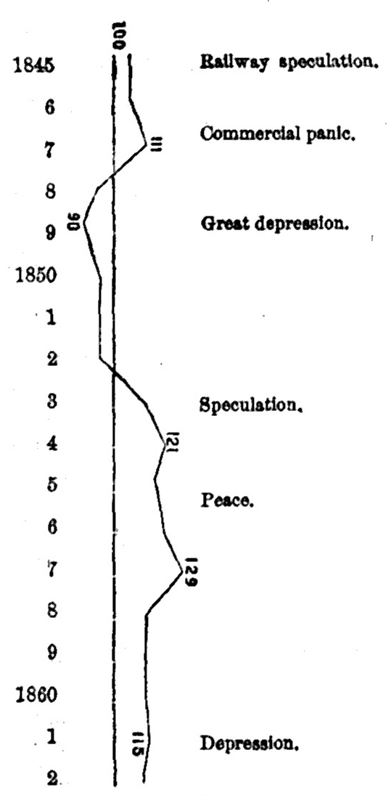

Chapter 22: Of The Value Of Money, As Dependent On Cost Of Production¶
22.1 § 1. The value of Money, in a state of Freedom, conforms to the value of the Bullion contained in it¶
But money, no more than commodities in general, has its value definitely determined by demand and supply. The ultimate regulator of its value is Cost of Production.
We are supposing, of course, that things are left to themselves. Governments have not always left things to themselves. It was, until lately, the policy of all governments to interdict the exportation and the melting of money; while, by encouraging the exportation and impeding the importation of other things, they endeavored to have a stream of money constantly flowing in. By this course they gratified two prejudices: they drew, or thought that they drew, more money into the country, which they believed to be tantamount to more wealth; and they gave, or thought that they gave, to all producers and dealers, high prices, which, though no real advantage, people are always inclined to suppose to be one.
We are, however, to suppose a state, not of artificial regulation, but of freedom. In that state, and assuming no charge to be made for coinage, the value of money will conform to the value of the bullion of which it is made. A pound-weight of gold or silver in coin, and the same weight in an ingot, will precisely exchange for one another. On the supposition of freedom, the metal can not be worth more in the state of bullion than of coin; for as it can be melted without any loss of time, and with hardly any expense, this would of course be done until the quantity in circulation was so much diminished as to equalize its value with that of the same weight in bullion. It may be thought, however, that the coin, though it can not be of less, may be, and being a manufactured article will naturally be, of greater value than the bullion contained in it, on the same principle on which linen cloth is of more value than an equal weight of linen yarn. This would be true, were it not that Government, in this country and in some others, coins money gratis for any one who furnishes the metal. If Government, however, throws the expense of coinage, as is reasonable, upon the holder, by making a charge to cover the expense (which is done by giving back rather less in coin than has been received in bullion, and is called levying a seigniorage), the coin will rise, to the extent of the seigniorage, above the value of the bullion. If the mint kept back one per cent, to pay the expense of coinage, it would be against the interest of the holders of bullion to have it coined, until the coin was more valuable than the bullion by at least that fraction. The coin, therefore, would be kept one per cent higher in value, which could only be by keeping it one per cent less in quantity, than if its coinage were gratuitous.
In the United States there was no charge for seigniorage on gold and silver to 1853, when one half of one per cent was charged as interest on the delay if coin was immediately delivered on the deposit of bullion; in 1873 it was reduced to one fifth of one per cent; and in 1875, by a provision of the Resumption Act, it was wholly abolished (the depositor, however, paying for the copper alloy). For the trade-dollars, as was consistent with their being only coined ingots and not legal money, a seigniorage was charged equal simply to the expense of coinage, which was one and a quarter per cent at Philadelphia, and one and a half per cent at San Francisco on the tale value.
22.2 § 2. —Which is determined by the cost of production¶
The value of money, then, conforms permanently, and in a state of freedom almost immediately, to the value of the metal of which it is made; with the addition, or not, of the expenses of coinage, according as those expenses are borne by the individual or by the state.
To the majority of civilized countries gold and silver are foreign products: and the circumstances which govern the values of foreign products present some questions which we are not yet ready to examine. For the present, therefore, we must suppose the country which is the subject of our inquiries to be supplied with gold and silver by its own mines [as in the case of the United States], reserving for future consideration how far our conclusions require modification to adapt them to the more usual case.
Of the three classes into which commodities are divided—those absolutely limited in supply, those which may be had in unlimited quantity at a given cost of production, and those which may be had in unlimited quantity, but at an increasing cost of production—the precious metals, being the produce of mines, belong to the third class. Their natural value, therefore, is in the long run proportional to their cost of production in the most unfavorable existing circumstances, that is, at the worst mine which it is necessary to work in order to obtain the required supply. A pound weight of gold will, in the gold-producing countries, ultimately tend to exchange for as much of every other commodity as is produced at a cost equal to its own; meaning by its own cost the cost in labor and expense at the least productive sources of supply which the then existing demand makes it necessary to work. The average value of gold is made to conform to its natural value in the same manner as the values of other things are made to conform to their natural value. Suppose that it were selling above its natural value; that is, above the value which is an equivalent for the labor and expense of mining, and for the risks attending a branch of industry in which nine out of ten experiments have usually been failures. A part of the mass of floating capital which is on the lookout for investment would take the direction of mining enterprise; the supply would thus be increased, and the value would fall. If, on the contrary, it were selling below its natural value, miners would not be obtaining the ordinary profit; they would slacken their works; if the depreciation was great, some of the inferior mines would perhaps stop working altogether: and a falling off in the annual supply, preventing the annual wear and tear from being completely compensated, would by degrees reduce the quantity, and restore the value.
When examined more closely, the following are the details of the process: If gold is above its natural or cost value—the coin, as we have seen, conforming in its value to the bullion—money will be of high value, and the prices of all things, labor included, will be low. These low prices will lower the expenses of all producers; but, as their returns will also be lowered, no advantage will be obtained by any producer, except the producer of gold; whose returns from his mine, not depending on price, will be the same as before, and, his expenses being less, he will obtain extra profits, and will be stimulated to increase his production. E converso, if the metal is below its natural value; since this is as much as to say that prices are high, and the money expenses of all producers unusually great; for this, however, all other producers will be compensated by increased money returns; the miner alone will extract from his mine no more metal than before, while his expenses will be greater: his profits, therefore, being diminished or annihilated, he will diminish his production, if not abandon his employment.
In this manner it is that the value of money is made to conform to the cost of production of the metal of which it is made. It may be well, however, to repeat (what has been said before) that the adjustment takes a long time to effect, in the case of a commodity so generally desired and at the same time so durable as the precious metals. Being so largely used, not only as money but for plate and ornament, there is at all times a very large quantity of these metals in existence: while they are so slowly worn out that a comparatively small annual production is sufficient to keep up the supply, and to make any addition to it which may be required by the increase of goods to be circulated, or by the increased demand for gold and silver articles by wealthy consumers. Even if this small annual supply were stopped entirely, it would require many years to reduce the quantity so much as to make any very material difference in prices. The quantity may be increased much more rapidly than it can be diminished; but the increase must be very great before it can make itself much felt over such a mass of the precious metals as exists in the whole commercial world. And hence the effects of all changes in the conditions of production of the precious metals are at first, and continue to be for many years, questions of quantity only, with little reference to cost of production. More especially is this the case when, as at the present time, many new sources of supply have been simultaneously opened, most of them practicable by labor alone, without any capital in advance beyond a pickaxe and a week's food, and when the operations are as yet wholly experimental, the comparative permanent productiveness of the different sources being entirely unascertained.
For the facts in regard to the production of the precious metals, see the investigation by Dr. Adolf Soetbeer,1 from which Chart IX has been taken. It is worthy of careful study. The figures in each period, at the top of the respective spaces, give the average annual production during those years. The last period has been added by me from figures taken from the reports of the Director of the United States Mint. Other accessible sources, for the production of the precious metals, are the tables in the appendices to the Report of the Committee to the House of Commons on the “Depreciation of Silver” (1876); the French official Procès-Verbaux of the International Monetary Conference of 1881, which give Soetbeer's figures to a later date than his publication above mentioned; the various papers in the British parliamentary documents; and the reports of the director of our mint. Since 1850 more gold has been produced than in the whole period preceding, from 1492 to 1850. Previous to 1849 the annual average product of gold, out of the total product of both gold and silver, was thirty-six per cent; for the twenty-six years ending in 1875, it has been seventy and one half per cent. The result has been a rise in gold prices certainly down to 1862,2 as shown by the following chart. It will be observed how much higher the prices rose during the depression after 1858 than it was during a period of similar conditions after 1848. The result, it may be said, was predicted by Chevalier.3
Chart IX.
Chart showing the Production of the Precious Metals, according to Value, from 1493 to 1879.
| Years. | Silver. | Gold. | Total. |
|---|---|---|---|
| 1493-1520 | $2,115,000 | $4,045,500 | $6,160,500 |
| 1521-1544 | 4,059,000 | 4,994,000 | 9,053,000 |
| 1545-1560 | 14,022,000 | 5,935,500 | 19,957,500 |
| 1561-1580 | 13,477,500 | 4,770,750 | 18,248,250 |
| 1581-1600 | 18,850,500 | 5,147,500 | 23,998,000 |
| 1601-1620 | 19,030,500 | 5,942,750 | 24,973,250 |
| 1621-1640 | 17,712,000 | 5,789,250 | 23,501,250 |
| 1641-1660 | 16,483,500 | 6,117,000 | 22,600,500 |
| 1661-1680 | 15,165,000 | 6,458,750 | 21,623,750 |
| 1681-1700 | 15,385,500 | 7,508,500 | 22,894,000 |
| 1701-1720 | 16,002,000 | 8,942,000 | 24,944,000 |
| 1721-1740 | 19,404,000 | 13,308,250 | 32,712,250 |
| 1741-1760 | 23,991,500 | 17,165,500 | 41,157,000 |
| 1761-1780 | 29,373,250 | 14,441,750 | 43,815,000 |
| 1781-1800 | 39,557,750 | 12,408,500 | 51,966,250 |
| 1801-1810 | 40,236,750 | 12,400,000 | 52,636,750 |
| 1811-1820 | 24,334,750 | 7,983,000 | 32,317,750 |
| 1821-1830 | 20,725,250 | 9,915,750 | 30,641,000 |
| 1831-1840 | 26,840,250 | 14,151,500 | 40,991,750 |
| 1841-1850 | 35,118,750 | 38,194,250 | 73,313,000 |
| 1851-1855 | 39,875,250 | 137,766,750 | 177,642,000 |
| 1856-1860 | 40,724,500 | 143,725,250 | 184,449,750 |
| 1861-1865 | 49,551,750 | 129,123,250 | 178,675,000 |
| 1866-1870 | 60,258,750 | 133,850,000 | 194,108,750 |
| 1871-1875 | 88,624,000 | 119,045,750 | 207,669,750 |
| 1876-1879 | 110,575,000 | 119,710,000 | 230,285,000 |

The fall of prices from 1873 to 1879, owing to the commercial panic in the former year, however, is regarded, somewhat unjustly, in my opinion, as an evidence of an appreciation of gold. Mr. Giffen's paper in the “Statistical Journal,” vol. xlii, is the basis on which Mr. Goschen founded an argument in the “Journal of the Institute of Bankers” (London), May, 1883, and which attracted considerable attention. On the other side, see Bourne, “Statistical Journal,” vol. xlii. The claim that the value of gold has risen seems particularly hasty, especially when we consider that after the panics of 1857 and 1866 the value of money rose, for reasons not affecting gold, respectively fifteen and twenty-five per cent.
The very thing for which the precious metals are most recommended for use as the materials of money—their durability—is also the very thing which has, for all practical purposes, excepted them from the law of cost of production, and caused their value to depend practically upon the law of demand and supply. Their durability is the reason of the vast accumulations in existence, and this it is which makes the annual product very small in relation to the whole existing supply, and so prevents its value from conforming, except after a long term of years, to the cost of production of the annual supply.
22.3 § 3. This law, how related to the principle laid down in the preceding chapter¶
Since, however, the value of money really conforms, like that of other things, though more slowly, to its cost of production, some political economists have objected altogether to the statement that the value of money depends on its quantity combined with the rapidity of circulation, which, they think, is assuming a law for money that does not exist for any other commodity, when the truth is that it is governed by the very same laws. To this we may answer, in the first place, that the statement in question assumes no peculiar law. It is simply the law of demand and supply, which is acknowledged to be applicable to all commodities, and which, in the case of money, as of most other things, is controlled, but not set aside, by the law of cost of production, since cost of production would have no effect on value if it could have none on supply. But, secondly, there really is, in one respect, a closer connection between the value of money and its quantity than between the values of other things and their quantity. The value of other things conforms to the changes in the cost of production, without requiring, as a condition, that there should be any actual alteration of the supply: the potential alteration is sufficient; and, if there even be an actual alteration, it is but a temporary one, except in so far as the altered value may make a difference in the demand, and so require an increase or diminution of supply, as a consequence, not a cause, of the alteration in value. Now, this is also true of gold and silver, considered as articles of expenditure for ornament and luxury; but it is not true of money. If the permanent cost of production of gold were reduced one fourth, it might happen that there would not be more of it bought for plate, gilding, or jewelry, than before; and if so, though the value would fall, the quantity extracted from the mines for these purposes would be no greater than previously. Not so with the portion used as money: that portion could not fall in value one fourth unless actually increased one fourth; for, at prices one fourth higher, one fourth more money would be required to make the accustomed purchases; and, if this were not forthcoming, some of the commodities would be without purchasers, and prices could not be kept up. Alterations, therefore, in the cost of production of the precious metals do not act upon the value of money except just in proportion as they increase or diminish its quantity; which can not be said of any other commodity. It would, therefore, I conceive, be an error, both scientifically and practically, to discard the proposition which asserts a connection between the value of money and its quantity.
There are cases, however, in which the potential change of the precious metals affects their value as money in the same way that it affects the value of other things. Such a case was the change in the value of silver in 1876. The usual causes assigned for that serious fall in value were the greatly increased production from the mines of Nevada; the demonetization of silver by Germany; and the decreased demand for export to India. It is true that the exports of silver from England to India fell off from about $32,000,000 in 1871-1872 to about $23,000,000 in 1874-1875; but none of the increased Nevada silver was exported from the United States to London, nor had Germany put more than $30,000,000 of her silver on the market;4 and yet the price of silver so fell that the depreciation amounted to 20-¼ per cent as compared with the average price between 1867 and 1872. The change in value, however, took place without any corresponding change in the actual quantity in circulation. The relation between prices and the quantities of the precious metals is, therefore, not so exact, certainly as regards silver, as Mr. Mill would have us believe; and thus their values conform more nearly to the general law of Demand and Supply in the same way that it affects things other than money.
It is evident, however, that the cost of production, in the long run, regulates the quantity; and that every country (temporary fluctuation excepted) will possess, and have in circulation, just that quantity of money which will perform all the exchanges required of it, consistently with maintaining a value conformable to its cost of production. The prices of things will, on the average, be such that money will exchange for its own cost in all other goods: and, precisely because the quantity can not be prevented from affecting the value, the quantity itself will (by a sort of self-acting machinery) be kept at the amount consistent with that standard of prices—at the amount necessary for performing, at those prices, all the business required of it.
-
“Edelmetall-Production,” in Petermann's “Mittheilungen,” Ergänzungsheft, No. 57. ↩
-
See Jevons's “A Serious Fall in the Value of Gold.” ↩
-
In his book “De la Baisse probable de l'Or” (1859). See also Cairnes's “Essays.” For authorities on the new gold, see Robinson's “California” (Larkin's and Mason's Reports, pp. 17, 33); Executive Documents of United States, 1848, I, 1; Westgarth's “Colony of Victoria,” pp. 122, 315; Wood, “Sixteen Months in the Gold Diggings,” p. 125; Lalor's “Cyclopædia,” II, p. 851; Walker, “Money,” part i, chaps. vii, viii. For the probable effects, see “North American Review,” October, 1852; Tooke's “History of Prices,” vi, p. 224; “Statistical Journal,” 1878, p. 230; Levasseur, “Question de l'Or.” As to how far the value of gold was lowered, Jevons, “Serious Fall,” etc.; “Statistical Journal,” 1865; ibid., 1869, p. 445; and Giffen's “Essays in Finance,” p. 82. ↩
-
“Report of the House of Commons on Depreciation of Silver,” 1876, p. v. ↩